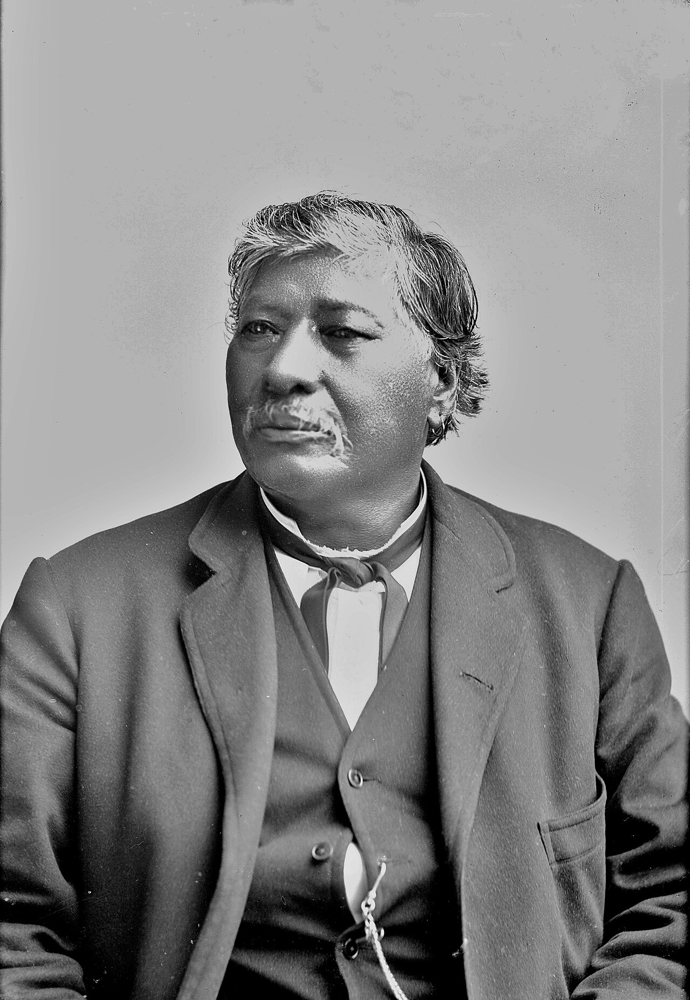

Two of Google's brightest leave in a single day: a Nobel laureate to Anthropic, the Transformer's author to OpenAI

John JumperPersonDeepMind research scientist and co-creator of AlphaFold; shared the 2024 Nobel Prize in Chemistry with Demis Hassabis and David Baker for predicting protein structures. announced on Friday, June 19, that he is leaving Google DeepMind after nearly nine years to join Anthropic. Jumper co-created AlphaFoldConceptDeepMind's system that predicts a protein's 3D shape from its amino-acid sequence, a 50-year problem in biology and the canonical proof that machine learning can crack hard science., the system that predicted more than 200 million protein structures and won him a share of the 2024 Nobel Prize in Chemistry. A director and engineering fellow at DeepMind, he said he would take time to recharge before starting; his role at Anthropic has not been disclosed.
The defection came a day after Noam ShazeerPersonGoogle VP and Gemini co-lead, co-author of the 2017 Transformer paper. Google reportedly paid about $2.7 billion to bring him back from Character.AI in 2024; he left for OpenAI on June 18., a Gemini co-lead and co-author of the 2017 paper “Attention Is All You Need”ConceptThe Google paper that introduced the Transformer architecture underlying virtually every modern large language model, from GPT to Gemini to Claude., announced on June 18 that he was leaving Google for OpenAI. Google had paid roughly $2.7 billion less than two years ago to bring Shazeer and his team back from Character.AI, the startup he co-founded after first leaving the company. Hassabis publicly thanked Jumper and framed the move as natural career movement.
Together the two exits read as Anthropic and OpenAI peeling marquee scientific talent off Google in the same week Anthropic is reported to be weeks into a confidential public-offering process. Jumper lands at a lab that has been building an explicit AI-for-science capacity, with wet-lab work and 2026 partnerships with the Allen Institute and Howard Hughes Medical Institute. The compensation packages that move people like this now rival professional-sports contracts.
“The protein laureate to one rival, the Transformer's father to another, both in a day.”
Why it mattersWhere the marquee scientists land is a leading indicator of which lab owns which research narrative, and that narrative is part of what a capital-markets reader is pricing as the OpenAI and Anthropic listings queue up. For a reader writing about AI reshaping the professions, it is the human capital of the field visibly migrating in real time.